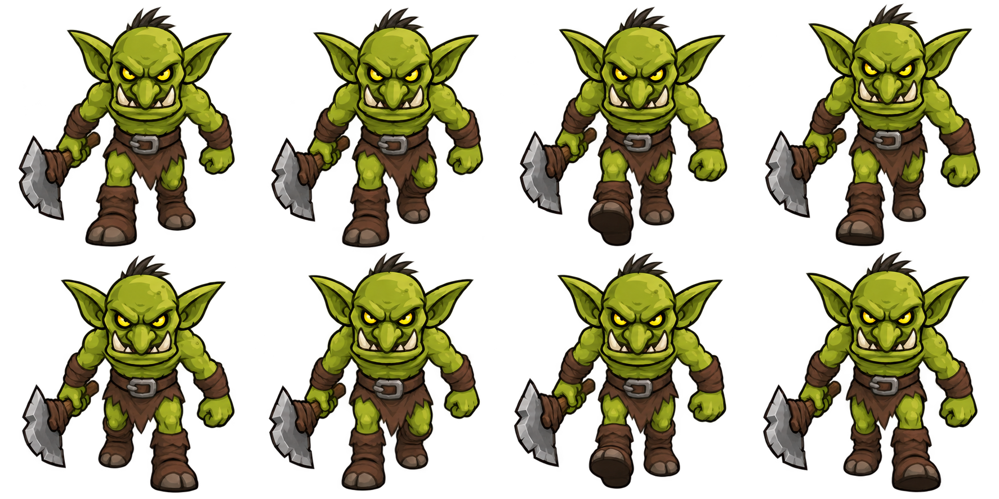
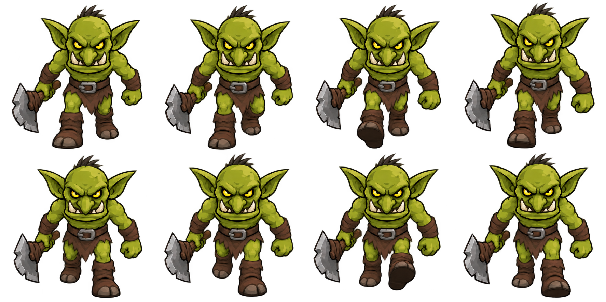

以当前游戏绿皮持斧苦工为参考，由生图生成8个姿势。4列×2行，顺序循环；这里只做切帧、统一缩放与整体对齐，未使用骨骼变形或程序补帧。试验素材尚未接入游戏。
当前正式素材中的哥布林苦工，原图保留。
先看脚步、脸与斧头的连续性，再判断是否值得继续。
单只动图 · 原图与动作对照 · 透明精灵表 · 下载PNG帧与图集 · 完整提示词

第二轮定向生图；最终只采用本图第6、7格，其他六格保留首轮。

正在读取本地图片…